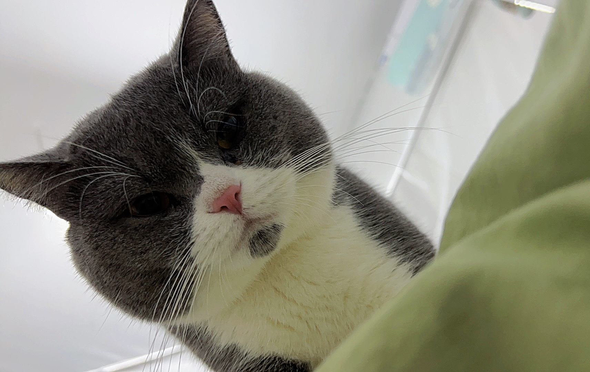
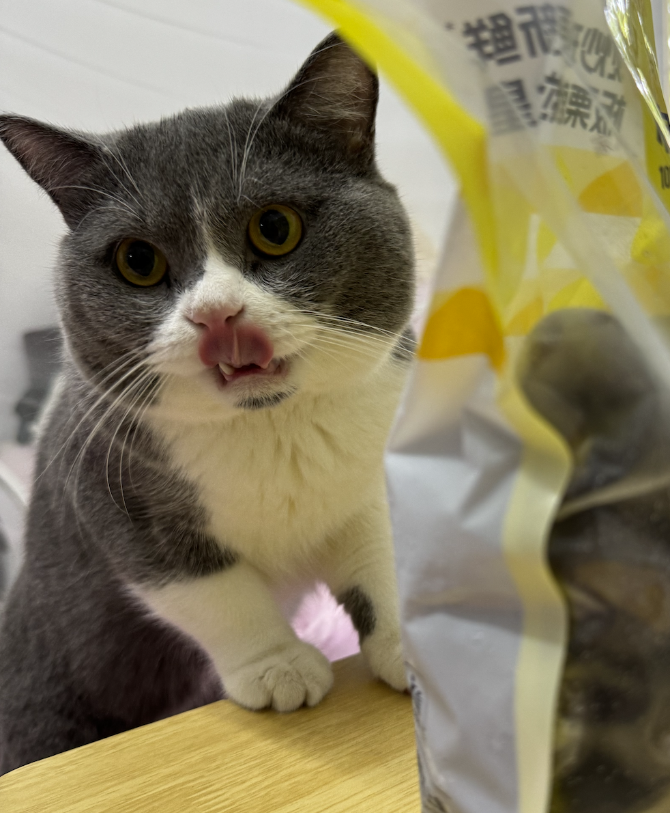
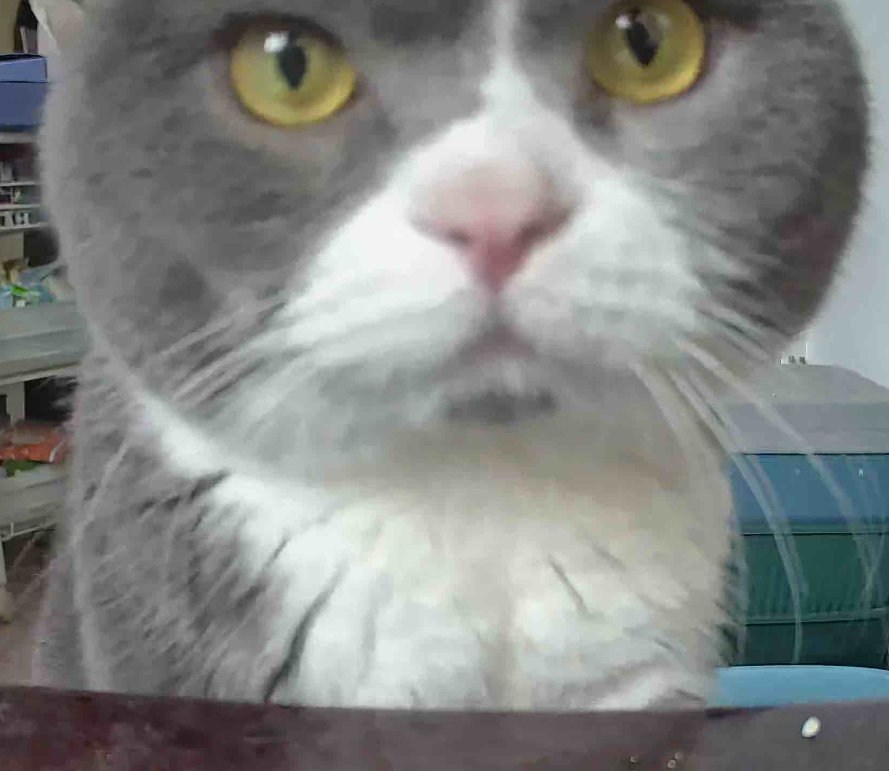
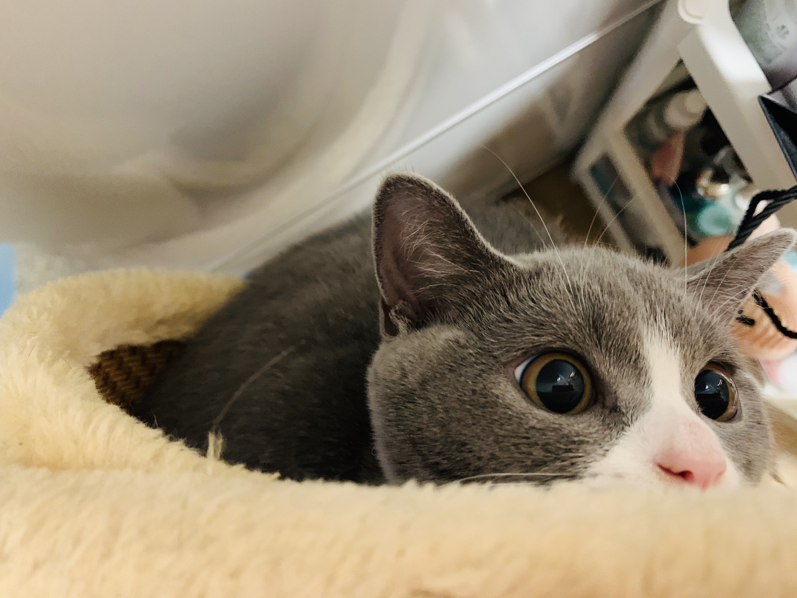
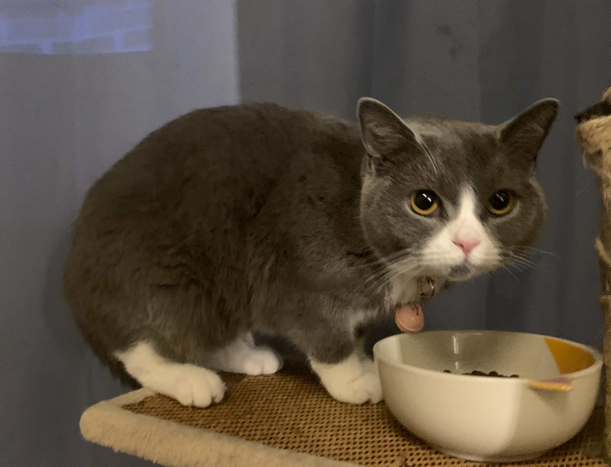

I am a research-track professor at the School of Cryptologic Science and Engineering, Shandong University.
My research interests encompass artificial intelligence security, particularly the design of provably secure AI protection systems integrated with cryptography, as well as the development of lightweight cryptographic algorithms.
I have published papers at top-tier security conferences, including IEEE S&P, ACM CCS, NDSS, and USENIX Security.
Meanwhile, I have been invited to serve on the program committees for USENIX Security'26, RAID'25, EuroS&P'25, ACSAC'24, PETS'25/'26, and SaTML'25, and as an area chair for ICLR'26.
Notably, I lead a curated reading list on safety, security, and privacy of large models: Awesome-LM-SSP (
- 2025.09-Now, research-track professor (研究员，齐鲁青年学者), School of Cryptologic Science and Engineering, Shandong University.
- 2023.07-2025.07, Postdoc (Shuimu Scholar), Institute for Advanced Study, Tsinghua University. Advisor: Prof. Xiaoyun Wang (IACR Fellow).
- 2017.07-2023.06, Ph.D. Student, Institute for Advanced Study, Tsinghua University. Advisor: Prof. Xiaoyun Wang (IACR Fellow).
- 2021.08-2023.01, Visiting Ph.D. Student, CISPA Helmholtz Center for Information Security, Saarbrücken, Germany. Advisor: Dr. Yang Zhang.
- 2013.07-2017.06, Undergraduate, Department of Electronic Engineering, Tsinghua University.
- 2025.09 - One paper got accepted in NeurIPS 2025 (spotlight)!
- 2025.09 - I'll serve as an Area Chair for ICLR 2026.
- 2025.06 - I'll serve on the Program Committee for USENIX Security 2026.
- 2025.03 - I'll serve on the Program Committee for PETS 2026.
- 2025.03 - I'll serve on the Program Committee for ACSAC 2025.
- 2025.03 - PEFTGuard got accepted in IEEE S&P 2025!
- 2025.02 - JailbreakEval won the Distinguished Poster Award of NDSS 2025!
- 2025.02 - I'll serve on the Program Committee for RAID 2025.
- 2025.01 - One paper got accepted in USENIX Security 2025!
- 2024.12 - Two papers got accepted in AAAI 2025!
- 2024.11 - One paper got accepted in NDSS 2025!
Find my publications on Google Scholar.
Conference-
ErrorTrace: A Black-Box Traceability Mechanism Based on Model Family Error Space
Chuanchao Zang, Xiangtao Meng, Wenyu Chen, Tianshuo Cong, Yaxing Zha, Dong Qi, Zheng Li, and Shanqing Guo
NeurIPS 2025 (spotlight) -
PEFTGuard: Detecting Backdoor Attacks Against Parameter-Efficient Fine-Tuning
Zhen Sun, Tianshuo Cong, Yule Liu, Chenhao Lin, Xinlei He, Rongmao Chen, Xingshuo Han, and Xinyi Huang
IEEE S&P (Oakland) 2025 [paper] -
From Purity to Peril: Backdooring Merged Models From “Harmless” Benign Components
Lijin Wang, Jingjing Wang, Tianshuo Cong†, Xinlei He†, Zhan Qin, and Xinyi Huang
USENIX Security 2025 [paper]
Artifact Badges: Available, Functional, Reproduced -
Safety Misalignment Against Large Language Models
Yichen Gong, Delong Ran, Xinlei He, Tianshuo Cong†, Anyu Wang†, and Xiaoyun Wang
NDSS 2025 [paper|code]
Artifact Badges: Available, Functional, Reproduced -
JailbreakEval: An Integrated Safety Evaluator Toolkit for Assessing Jailbreaks Against Large Language Models
Delong Ran, Jinyuan Liu, Yichen Gong, Jingyi Zheng, Xinlei He, Tianshuo Cong†, and Anyu Wang
NDSS 2025 (Poster Session) [paper|code]
Distinguished Poster Award -
Beyond the Tip of Efficiency: Uncovering the Submerged Threats of Jailbreak Attacks in Small Language Models
Sibo Yi, Tianshuo Cong, Xinlei He, Qi Li, and Jiaxing Song
ACL 2025 (Findings) [paper] - FigStep: Jailbreaking Large Vision-Language Models via Typographic Visual Prompts
Yichen Gong, Delong Ran, Jinyuan Liu, Conglei Wang, Tianshuo Cong†, Anyu Wang†, Sisi Duan, and Xiaoyun Wang
AAAI 2025 (Oral) [paper|code] - CL-Attack: Textual Backdoor Attacks via Cross-Lingual Triggers
Jingyi Zheng, Tianyi Hu, Tianshuo Cong, and Xinlei He
AAAI 2025 [paper|code] - Have You Merged My Model? On The Robustness of Large Language Model IP Protection Methods Against Model Merging
Tianshuo Cong, Delong Ran, Zesen Liu, Xinlei He, Jinyuan Liu, Yichen Gong, Qi Li, Anyu Wang, and Xiaoyun Wang
LAMPS@CCS 2024 [paper|code]
Best Paper Award - Test-time Poisoning Attacks Against Test-time Adaptation Models
Tianshuo Cong, Xinlei He, Yun Shen, and Yang Zhang
IEEE S&P (Oakland) 2024 [paper|code] - SSLGuard: A Watermarking Scheme for Self-supervised Learning Pre-trained Encoders
Tianshuo Cong, Xinlei He, and Yang Zhang
ACM CCS 2022 [paper|code]


-
分组密码算法FESH
贾珂婷, 董晓阳, 魏淙洺, 李铮, 周海波, 丛天硕
密码学报 (Journal of Cryptologic Research) [paper]
全国密码算法设计竞赛(分组算法)二等奖
-
新型分组密码算法轮函数的构造方式
贾珂婷, 董晓阳, 魏淙洺, 丛天硕
CN201910546990.1
Awards and Honors
- Qilu Young Scholar of Shandong University (山东大学齐鲁青年学者)
- KDD 2025 Excellent Reviewer
- ICLR 2025 Notable Reviewer
- NDSS 2025 Distinguished Poster Award
- LAMPS@CCS 2024 Best Paper Award
- Shuimu Tsinghua Scholar (清华大学水木学者)
- 2023 CACR Outstanding Doctoral Dissertation Award (2023年中国密码学会优秀博士论文)
- 2nd Prize in Block Cipher Track, National Cryptographic Algorithm Design Competition, 2021 (全国密码算法设计竞赛(分组算法)二等奖)
Grants
- 国家自然科学基金青年基金项目(C类), 30万, 主持
- 国家重点研发计划《对称密码自动化分析设计》, 395万, 课题骨干
- NDSS 2025 (Session 3D: AI Safety)
- ICLR 2026
- USENIX Security 2026
- EuroS&P 2025
- ACSAC 2024, 2025
- RAID 2025
- PETS 2025, 2026
- SaTML 2025
- Inscrypt 2025
- IWQoS 2025
- ICML 2025
- NeurIPS 2024, 2025
- ICLR 2025(🎖️)
- CVPR 2024, 2025
- AAAI 2025
- KDD 2025(🎖️)
- MM 2024
- ACL 2024
- ECCV 2024
- AISTATS 2025
- IEEE Transactions on Information Forensics and Security (TIFS)
- IEEE Transactions on Dependable and Secure Computing (TDSC)
- ACM Transactions on Privacy and Security (TOPS)
- ACM Transactions on Knowledge Discovery from Data (TKDD)
- 《信息安全学报》(Journal of Cyber Security)
- A curated reading list on safety, security, and privacy of large models: Awesome-LM-SSP
- Security and Privacy Conference Deadlines
- AI Conference Deadlines
- Top Crypto and Security Conferences Ranking
- Lecturer of the tutorial on "Safety, Security, and Privacy of Foundation Models" at IEEE WIFS 2024, Rome, Italy (In English, ~4 hours).
- Teaching Assistant of the graduate course "Advanced Numerical Analysis", Fall 2019, Tsinghua University.
- Teaching Assistant of the undergraduate course "Introduction to Information Science and Technology", Spring 2018, Tsinghua University.
- 2025年密码测评理论与关键技术前沿论坛, 中国密码学会密码测评专委会, 2025.08.01, 山东济南
- 清华大学基础模型2025学术年会, 大模型安全分论坛, 2025.05.29, 北京
- Physical Attack And Design Attestation (PANDS) 2025, 纽创信安, 2025.04.23, 北京
- 空间信息系统安全前沿科技大会, 2025.04.11, 江苏无锡
- 2024 OPPO-ACM-IEEE暨第四节泛终端安全技术论坛, 2024.03.29, 陕西西安
- Tom (Birthday: 2022.07.11, INFJ)



- Tangtang (Birthday: 2019.03.21, ISTP)

